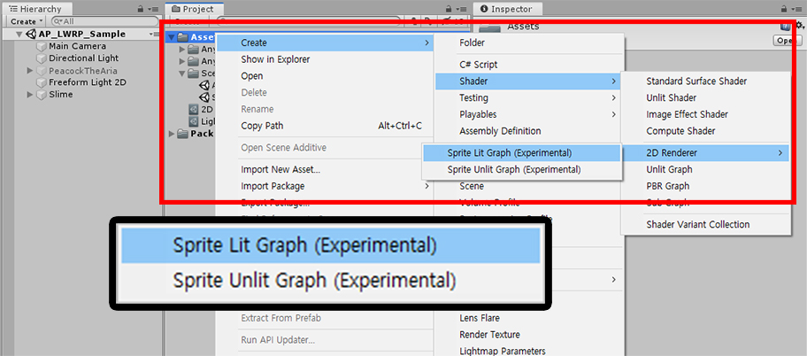
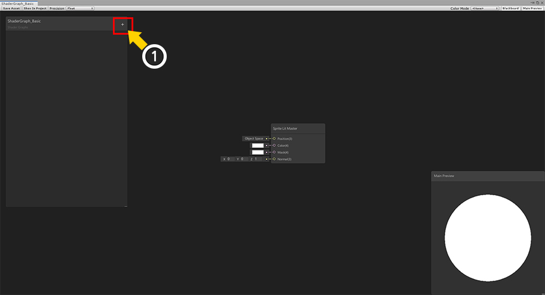
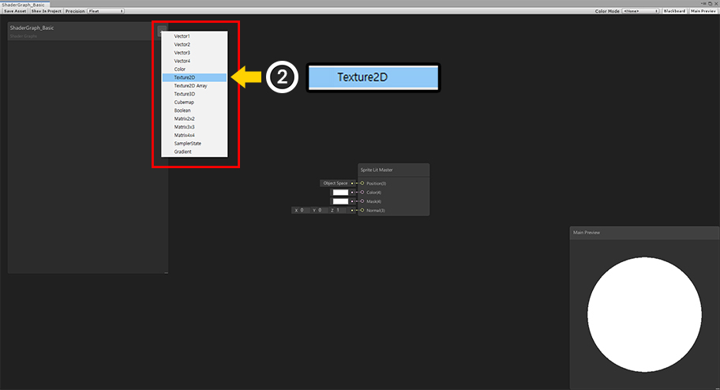
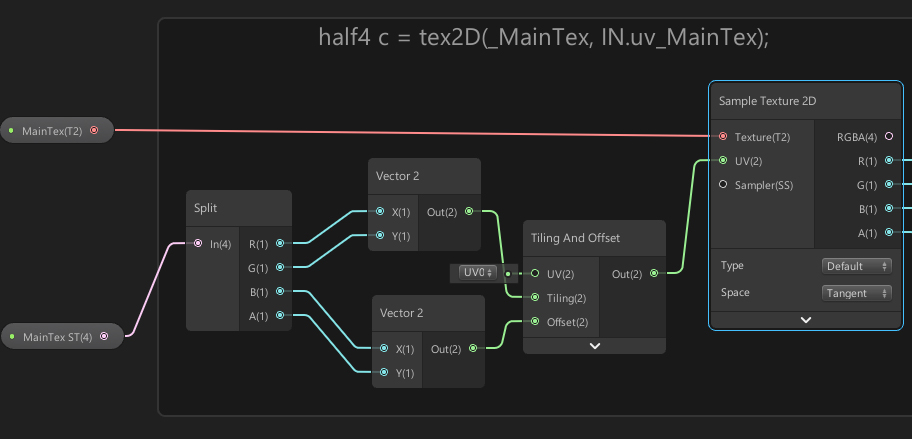
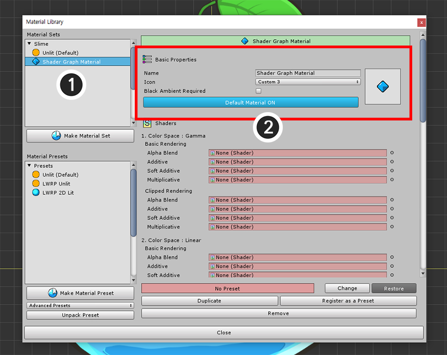
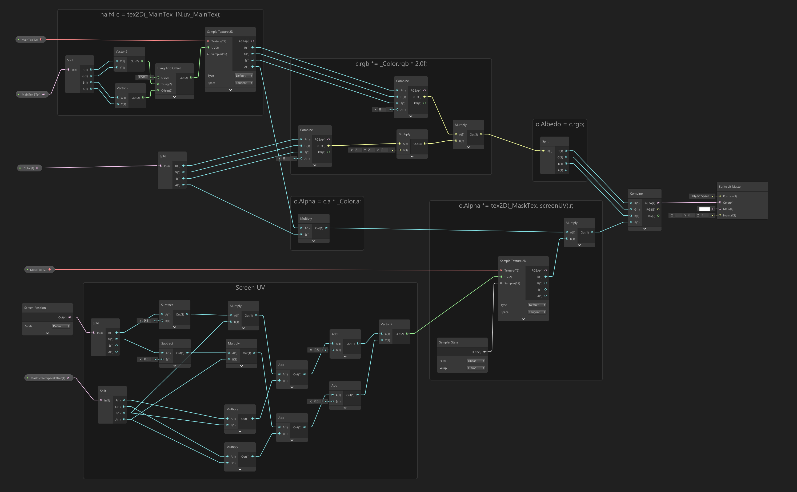
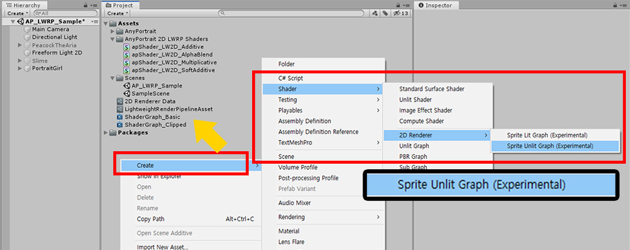
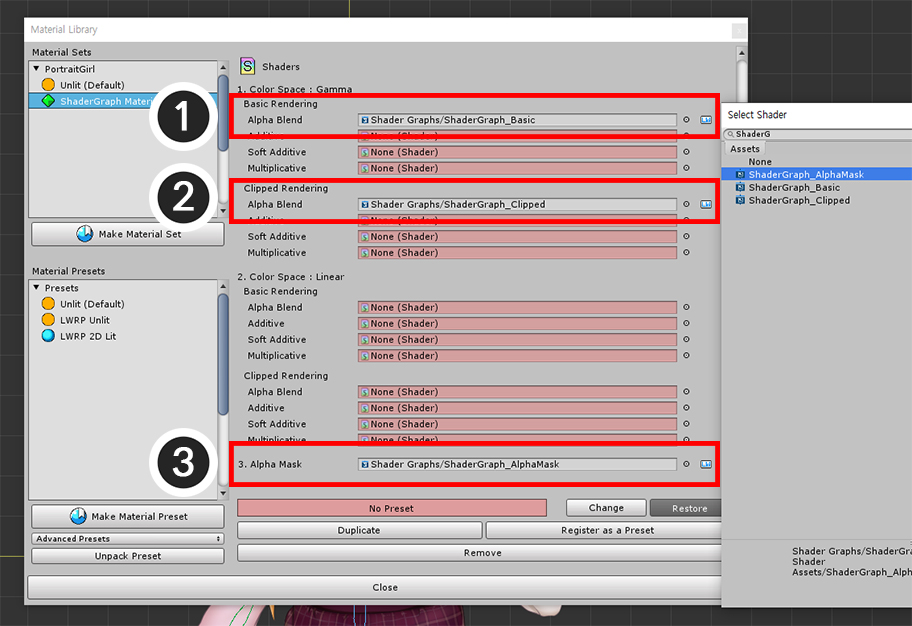

AnyPortrait > Manual > Creating Materials with Shader Graph
Creating Materials with Shader Graph
1.2.2
"Shader Graph" is a feature that allows you to create shaders using the node-based tool.
This feature, introduced in Unity 2018, has the advantage that it works with "LWRP" and "HDRP" because it is highly compatible.
Custom shaders can be created using the "Shader Graph" according to the rules to create materials compatible with AnyPortrait.
This page explains how to use the "Shader Graph" to create a custom shader and apply it as a material.
It is recommended to refer to the following pages for additional information.
- Custom Shader
- Shader Graph (Unity official page)
- Material Library
Note that.
The shaders described on this page are graphs of the basic shader code.
By following the basic rules, you are free to create shaders to suit your needs.

Let's create a Shader Graph asset.
In "Create > Shader > 2D Renderer", you can create two types of "Shader Graph Assets".
In this example, we will use the "Sprite Lit Graph (Experimental)".
Note that.
In this example, we created a shader that is compatible with "LWRP 2D".
It is also possible to create other kinds of graphs.

Double-click on the Shader Graph asset you created to open the graph tool.
Currently, there is the Sprite Lit Master node only that is an output node.
(1) Press the "+" button.

(2) Select the type of property. First, select Texture2D.

(1) A new property is added.
(2) Set the property name to "MainTex". The property names do not have to be the same as this example. (Not important.)
(3) Set the name of the Reference to "_MainTex". This value will be the same as this example because it will be the property name on the shader.

(1) In the same way, add a Vector4 type property and a Color type property as above.
(2) Set the second property as follows.
- Reference : _MainTex_ST
- Type : Vector4
- Default : (1, 1, 0, 0)
(3) Set the third property as follows.
- Reference : _Color
- Type : Color
- Default : (0.5, 0.5, 0.5, 1)

We have written a basic shader to match AnyPortrait's custom shader rules.
(Click the image to enlarge.)

These are the nodes that sample the texture to create color.
You can also use the default UVs, but with MainTex ST you can set additional tiling of UVs and more.
If the value of MainTex ST is not (1, 1, 0, 0), it may not render normally.

These nodes combine the color of the texture with the color of the _Color property.
AnyPortrait uses the "2X Multiply" method for color computation.
So in this graph, the RGB value of _Color is multiplied by 2 and then by the color of the texture.

The value of the alpha channel is made by multiplying the alpha value of the texture by the alpha value of _Color.
The finished color is linked to the "Color" of the Sprite Lit Master.

Now let's apply this Shader Graph to AnyPortrait.
Open the AnyPortrait Editor and select a character.
(1) Select Root Unit.
(2) Press the Material Library button.
(3) Press the Make Material Set button.
(4) The new Material Set will not use preset, so select "(None)".
(5) Press the Select button.

(1) Select the created Material Set.
(2) Set the Name and Icon of the Material Set, and click the Default Material button to set it as the default material.

Assign the shader you created with the Shader Graph.
(3) Assign the shader you created earlier to "Color Space : Gamma > Basic Rendering > Alpha Blend".

Bake it and check it out in the Unity scene.

You can see that the material created by the Shader Graph is applied.
Creating Shader Graph for Clipping Mesh
Two more shaders are needed to render the clipping mesh.
- Clipped Shader
- Alpha Mask Shader
Creating these shaders with the Shader Graph allows clipped meshes to be rendered properly.
First, let's create a clipped shader.

Duplicate the shader created before.

(1) Add the Texture2D type and Vector4 type properties for clipping rendering as follows.
(2) Set the properties to receive the mask texture input as follows.
- Reference : _MaskTex
- Type : Texture2D
(3) Set the properties related to the position and size of the mask texture as follows.
- Reference : _MaskScreenSpaceOffset
- Type : Vector4
- Default : (0, 0, 0, 1)

Since we duplicated the Shader Graph created above, the graph for basic rendering has already finished.
Let's add a node for clipping.
First, add three nodes:
(1) MaskTex Property
(2) Screen Position Node (Default Mode)
(3) MaskScreenSpaceOffset Property

Complete the Shader Graph by adding clipping related nodes to the existing graph.
The nodes at the bottom of the graph and the nodes related to alpha calculation have been added and modified.
(Click the image to enlarge.)
Let's look at the nodes involved in clipping.

This is the graph to calculate the UV for the mask texture using the Screen Position node and MaskScreenSpaceOffset properties.
It's quite complicated because it is related to the optimization of AnyPortrait's clipping calculation.
Do not modify this part, just make it the same as the image above.

These are nodes that modify alpha values using the mask texture and UVs created using Screen Position and MaskScreenSpaceOffset.
You need to add these nodes to make the image transparent by the mask texture.

Let's create an Alpha Mask shader that creates a mask texture for clipping rendering.
AnyPortrait uses R channel as mask data.
Due to the nature of the R channel, the color may be affected by light.
So choose a Sprite Unlit Graph that is not affected by light to create a new Shader Graph.

Double click the Shader Graph you created to open the graph tool.
Add 3 properties as above.
These properties are identical to the properties described previously.

Let's write a Shader Graph that creates a mask texture.
Very similar to the Shader Graphs above, you can see that only the nodes related to the alpha values are different.
(Click the image to enlarge.)

The mask texture of AnyPortrait stores alpha data in the R channel.
In the image above, you can see that the value of A channel of _MainTex color and _Color color is transferred to R channel.
Other parts of the graph are the same as before.

Let's create a material for clipping rendering.
Reopen the Material Library and set up the shaders you created as shown in the image above.
(1) Basic Shader : Color Space : Gamma > Basic Rendering > Alpha Blend
(2) Clipped Shader : Color Space : Gamma > Clipped Rendering > Alpha Blend
(3) Alpha Mask Shader : Alpha Mask

If you want to render in an LWRP or LWRP 2D environment, the clipping mesh will not render properly by default.
This is not a shader problem, but a difference in how Unity cameras are handled.
So creating a general-purpose shader with the Shader Graph does not solve the problem.
Try the following methods:
(1) Open the Bake dialog.
(2) Select the Setting tab.
(3) Change the value of the Render Pipeline option to match the current graphics option.
If your graphics settings are in LWRP or LWRP 2D, change to the Scriptable Render Pipeline. (If not, set to Default.)
(This option is supported since Unity 2019.)

You can now Bake and check in the Unity scene to see your character render properly.
About Shader Graph
Shaders created with Shader Graph have the advantage of being compatible with both old and new rendering methods.
So if you are using SRP (Scriptable Render Pipeline) method like LWRP, you should use Shader Graph.
AnyPortrait also supports Shader Graph, but has the following issues.
1. When using Shader Graph, Blend modes other than Alpha Blend are not supported.
: This is an issue where the Shader Graph should be improved or AnyPortrait should be improved.
Currently, to solve this problem, you need to manually modify the code of the shader written in the Shader Graph.
Our team has modified the shaders of AnyPortrait's LWRP 2D preset package (Related page) is written in Shader Graph to support optimization and blend modes.
2. If you do not use LWRP, Surface Shader is recommended.
: AnyPortrait has been developed for use with Unity 5.5.
It is therefore written to render with Surface Shader based on that version.
As Unity's rendering process continues to change from version to version, Surface Shader is recommended to avoid rendering issues.
However, these policies may change as the Unity engine is updated, and AnyPortrait will support the latest technology available.